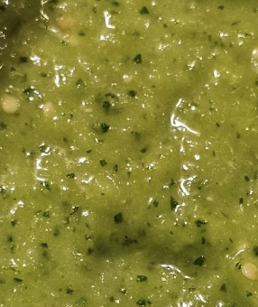

Home
Salsa Verde

A lovely, bright green salsa whose primary ingredient is tomatillos, rather than the typical base of tomatoes.
Ingredients
- Fresh Tomatillos
- Avocado
- Garlic
- Cilantro
- White Onion
Steps
- Chop cilantro (include stems).
- Cut other ingredients into small enough pieces for a food processor.
- Pulse all ingredients together in food processor until it arrives at the consistency you desire.
- Serve up smiles!